📑 Dans cette page (9 sections)
🆕 Créer le service web
render.com → New → Web Service → connecte GitHub → choisis le dépôt.
| Champ | Valeur |
|---|---|
| Name | scp-foundation (devient https://<name>.onrender.com, avec suffixe aléatoire si le nom est pris) |
| Runtime | Python 3 |
| Build Command | pip install -r requirements.txt |
| Start Command | gunicorn app:app --workers 1 --threads 4 --timeout 180 --bind 0.0.0.0:$PORT |
| Instance Type | Free (test) ou payant |
| Health Check Path | /healthz |
🧩 Variables (onglet Environment)
| Variable | Valeur |
|---|---|
PYTHON_VERSION |
3.12.7 |
FLASK_SECRET_KEY |
longue valeur aléatoire |
DATABASE_URL |
adresse Supabase « Session pooler » (page 6) |
DISCORD_CLIENT_ID / DISCORD_CLIENT_SECRET |
depuis le portail Discord |
DISCORD_REDIRECT_URI |
https://TON-ADRESSE/auth/callback |
ADMIN_DISCORD_IDS |
tes ID séparés par des virgules |
SITE_URL |
https://TON-ADRESSE (sans / final) |
Chaque enregistrement de variable redéploie le service.
📐 Blueprint (optionnel)
💡 Astuce
Le fichier render.yaml fourni décrit déjà le service (variante gratuite). Il ne crée pas la base : colle l'adresse Supabase dans DATABASE_URL.
render.yaml décrit le service (variante gratuite, base externe). New → Blueprint le lit ; les variables sync: false sont à saisir à la main.
✅ Vérifier
- Statut Live sur le tableau de bord.
https://TON-ADRESSE/healthzafficheok.- « Accès éditeur » → Discord → Studio.
📜 Logs
Onglet Logs : erreurs Python, requêtes, connexion à la base. Erreurs typiques dans Dépannage.
⚠️ Offre gratuite : limites
ℹ️ Note
Sur l'offre gratuite, aucune donnée locale n'est conservée et le site se met en veille. C'est pour cela que la base (Supabase) et les médias (R2/S3) sont externes.
%%{init: {"theme":"base","themeVariables":{"primaryColor":"#0f2130","primaryTextColor":"#e6eef5","primaryBorderColor":"#5fd0ff","lineColor":"#3d89ab","secondaryColor":"#1a0d14","tertiaryColor":"#0b1824","edgeLabelBackground":"#0f2130","fontFamily":"ui-monospace, Menlo, Consolas, monospace","noteBkgColor":"#1a0d14","noteTextColor":"#ffb4bb","actorBkg":"#0f2130","actorBorder":"#5fd0ff","actorTextColor":"#e6eef5","signalColor":"#3d89ab","signalTextColor":"#3d89ab","labelBoxBkgColor":"#0f2130","labelTextColor":"#e6eef5","loopTextColor":"#3d89ab"}}}%%
stateDiagram-v2
state "Réveil (premier chargement lent)" as Reveil
[*] --> Actif
Actif --> Veille : inactivité
Veille --> Reveil : visite
Reveil --> Actif : démarré
- Mise en veille après inactivité ; premier chargement lent au réveil.
- Pas de disque persistant : les fichiers locaux disparaissent à chaque redéploiement → base externe et médias externes obligatoires.
- Ressources limitées : garde
--workers 1.
💳 Passer en payant
- Plus de mise en veille, plus de ressources, disque persistant possible.
- Avec un disque, une seule instance ; pour plusieurs instances, utilise R2/S3.
🌐 Nom de domaine personnalisé
- Service → Settings → Custom Domains → ajoute ton domaine.
- Crée l'enregistrement DNS demandé (CNAME/A) chez ton registrar ; Render émet le certificat HTTPS.
- Mets à jour
SITE_URL,DISCORD_REDIRECT_URIet le Redirect du portail Discord.
🔁 Déploiement automatique et retour arrière
Chaque git push sur la branche suivie redéploie. Un déploiement raté laisse l'ancienne version en ligne. Pour revenir en arrière, redéploie une version précédente depuis l'historique des déploiements.


◀ 🐙 GitHub · 🗄️ Base de données ▶

⛨ SCP Foundation — projet de fan non officiel · contenus SCP sous licence CC BY-SA 3.0 lorsque applicable · ⬆ retour en haut